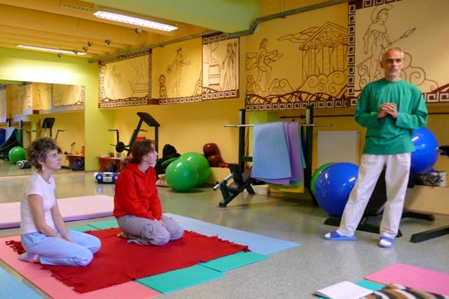

drukuj
drukujWarsztaty
Zapraszam na warsztat shiatsu 26 - 27 czerwca 2021 w Warszawie i 3 - 4 lipca 2021 w Gdańsku.
Zapisy: Wioletta Rybczyk,
tel. 693 003 837
Warsztaty shiatsu są otwarte dla wszystkich bez względu na wiek, zawód, poglądy polityczne i predyspozycje.
Przez dwa dni w ciągu 12-14 godzin poznasz podstawy tej unikalnej metody i będziesz mógł/mogła praktykować samodzielnie.
Przyjemny i pożyteczny sposób na spędzenie weekendu przy muzyce skomponowanej przeze mnie specjalnie do masażu shiatsu.
W warsztacie mogą wziąść udział osoby, które już uczestniczyły w zajęciach. Po prostu - praktyka.
Uczestnicy proszeni są o przyniesienie ze sobą grubych koców (mogą być wełniane).
Zajęcia odbywają się w godzinach 10 - 17. Czas zakończenia traktujemy elastycznie.
Czasem jest miło tak sobie posiedzieć i porozmawiać...
Koszt udziału w warsztacie 550 zł.
Jeżeli masz ochotę zorganizować warsztat napisz lub zadzwoń.

Zobacz video
Przewodnik SHIATSU 40 stron, ilustrowany w formacie PDF (9.2 MB) wysyłam mailem po wpłacie 10 PLN na konto.
CD z sesją SHIATSU w czasie realnym w formacie divx i przwodnikiem pdf wysyłam pocztą po wpłacie na konto kwoty 25 PLN.
Nr. konta: Alior Bank 44 2490 1044 0000 4200 3498 6556